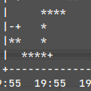

Linux
Alles zum Thema Gnu Linux
Links zu SNMP, Telegraf und Grafana
31.07.2022

Nachdem die letzten Linksammlungen eher immer wilde Zusammenstellungen waren, die alle möglichen und unmöglichen Themen umfassten, hier nun eine thematisch eher enger begrenzte...
Kubernetes und Rock64
29.07.2022
Ich habe bereits darüber berichtet, wie ich versucht habe, eine stabile OS-Basis für ein Rock64-Board zu schaffen, mit der es möglich sein sollte, von einem am USB3-Anschluss verbundenen Massenspeicher zu booten.
Ich habe nach einer Möglichkeit gesucht, meine eigene Webseite zu gestalten. Nach einiger Überlegung und ein paar Versuchen mußte ich feststellen, daß ich mich mit keiner der ausprobierten Varianten glücklich fühlte - also ran ans Zeichenbrett und was eigenes geschaffen!
Debian 11 auf Rock64
21.07.2022
Nachdem bei mir ein rock64 freigeworden war und ich mir überlegt habe, was ich damit anfangen könnte kam die Idee eines Kubernetes-Trainingsclusters wieder einmal zum Vorschein - dazu wäre es aber gut, zunächst erst einmal eine aktuelle Basisinstallation zu haben...
MOTD in Linux
16.07.2022
Vieles von dem, was Canonical tut, finde ich einigermaßen fragwürdig - eine Sache allerdings haben sie sich einfallen lassen, die unterstütze ich vollumfänglich:
CRL next update mit Telegraf überwachen
27.06.2022
Nachdem ich neulich bereits darüber berichtete, wie man die Gültigkeit von Serverzertifikaten mittels Telegraf und Grafana überwachen kann habe ich mich nun eines weiteren Aspekts in diesem Zusammenhang angenommen.
Grafana im Terminal
27.06.2022

Nachdem seit einigen Tagen mein Rechner streikt, auf dem Influx lief habe ich auch keinen Zugriff mehr auf die darauf basierenden Auswertungen mit Grafana. Durch bisherige Erfolge mit Gnuplot ermutigt suchte ich nach einer schnell umsetzbaren Alternative...
Ich habe hier bereits über erste Versuche zu Networkbonding berichtet - Nun, da die Tagestemperaturen langsam wieder unerträglich werden habe ich mich nochmals damit beschäftigt
Writefreely im Docker-Zoo angekommen
13.04.2022

Ich habe wieder einen neuen Container in meinen Docker-Zoo integriert...
Redundante Netzwerkschnittstellen für Laptops
18.02.2022
Ich hatte in eine meiner letzten Linksammlungen mehrere Links zum Thema "Netzwerkbonding" aufgenommen -ich wollte mich einmal damit beschäftigen, jedoch eigentlichaus einem ganz anderen Grund...
Ältere Artikel
Hier geht es zum Archiv der Artikel, die vor dem 02.11.2021 verfasst wurden:
- Überwachung Festplattenstatus mit Grafana
- pam_nfc und Ubuntu 20.04
- ...


Tags
Android Basteln C und C++ Chaos Datenbanken Docker dWb+ ESP Wifi Garten Geo Git(lab|hub) Go GUI Gui Hardware Java Jupyter Komponenten Komponenten Git(lab|hub) Links Linux Markdown Markup Music Numerik PKI-X.509-CA Python QBrowser Rants Raspi Revisited Security Software-Test sQLshell TeleGrafana Verschiedenes Video Virtualisierung Windows Upcoming...
Manche nennen es Blog, manche Web-Seite - ich schreibe hier hin und wieder über meine Erlebnisse, Rückschläge und Erleuchtungen bei meinen Hobbies.
Wer daran teilhaben und eventuell sogar davon profitieren möchte, muß damit leben, daß ich hin und wieder kleine Ausflüge in Bereiche mache, die nichts mit IT, Administration oder Softwareentwicklung zu tun haben.
Ich wünsche allen Lesern viel Spaß und hin und wieder einen kleinen AHA!-Effekt...
PS: Meine öffentlichen GitHub-Repositories findet man hier.